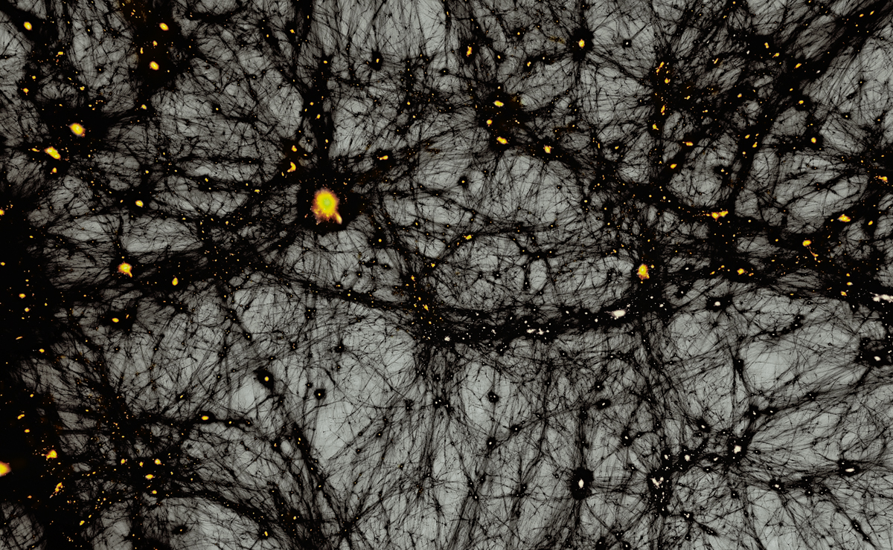
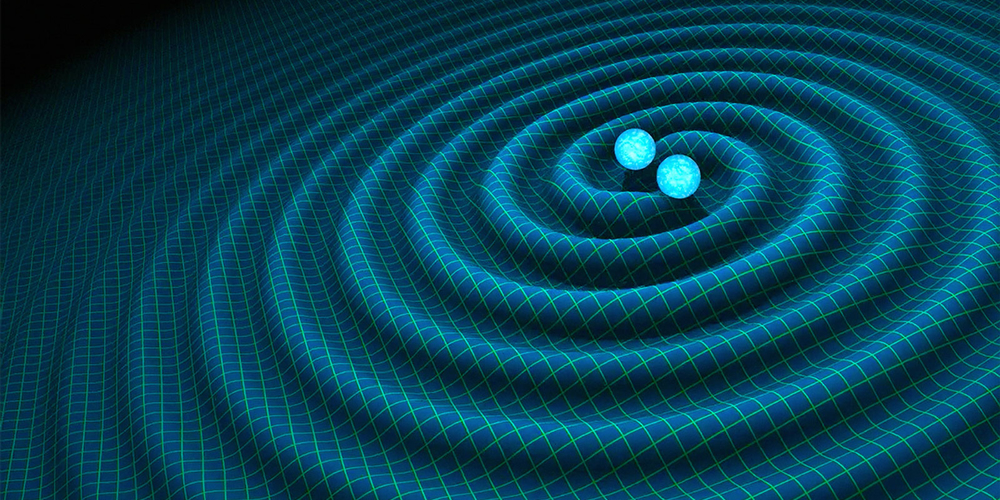

Conceitos Avançados da Astrofísica
Nesta seção, exploramos conceitos mais complexos da astrofísica que lidam com fenômenos extremos e com os limites do nosso entendimento sobre o universo. Aqui abordamos espaço-tempo em expansão, buracos negros, distorção da luz pelo tempo, e outros fenômenos avançados que desafiam a intuição.
Espaço-Tempo em Expansão
O universo está em constante expansão desde o Big Bang. O espaço-tempo não é estático; as galáxias se afastam umas das outras à medida que o próprio tecido do universo se expande. Essa expansão é descrita pela métrica de Friedmann-Lemaître-Robertson-Walker e está relacionada à constante cosmológica, que representa a energia escura, responsável por acelerar essa expansão. Observar o desvio para o vermelho (redshift) da luz de galáxias distantes nos permite medir a taxa de expansão e estimar a idade do universo.
Buracos Negros
Buracos negros são regiões do espaço-tempo onde a gravidade é tão intensa que nada, nem mesmo a luz, pode escapar. Formam-se a partir do colapso de estrelas massivas ou fusões de objetos compactos. A teoria da relatividade geral descreve que a massa concentra-se em um ponto chamado singularidade, rodeada pelo horizonte de eventos, o limite a partir do qual não há retorno. Buracos negros afetam o espaço-tempo ao redor, causando efeitos de maré extremos e curvatura gravitacional da luz.
Distorção da Luz e Tempo
A presença de massa e energia distorce o espaço-tempo, curvando trajetórias de luz e alterando a percepção do tempo. Esse fenômeno é conhecido como lente gravitacional, e pode ser observado quando a luz de estrelas ou galáxias distantes é desviada por objetos massivos entre elas e nós. Próximo a buracos negros, a dilatação temporal se torna extrema: o tempo passa mais lentamente para objetos próximos à singularidade em relação a observadores distantes.
Matéria e Energia Escura
Matéria escura e energia escura são componentes fundamentais do universo, embora invisíveis diretamente. A matéria escura exerce gravidade suficiente para manter galáxias coesas, enquanto a energia escura impulsiona a expansão acelerada do cosmos. Ambas são essenciais para compreender a estrutura e evolução do universo em grande escala, conectando os conceitos básicos de gravitação e dinâmica orbital a fenômenos cosmológicos avançados.
Ondas Gravitacionais
Ondas gravitacionais são ondulações no espaço-tempo produzidas por eventos extremamente energéticos, como fusões de buracos negros ou estrelas de nêutrons. Detectadas diretamente em 2015, elas permitem estudar fenômenos que não emitem luz, fornecendo informações sobre massa, energia e dinâmica de sistemas distantes. As ondas gravitacionais representam a conexão mais direta entre a teoria da relatividade geral e observações práticas da astrofísica moderna.
